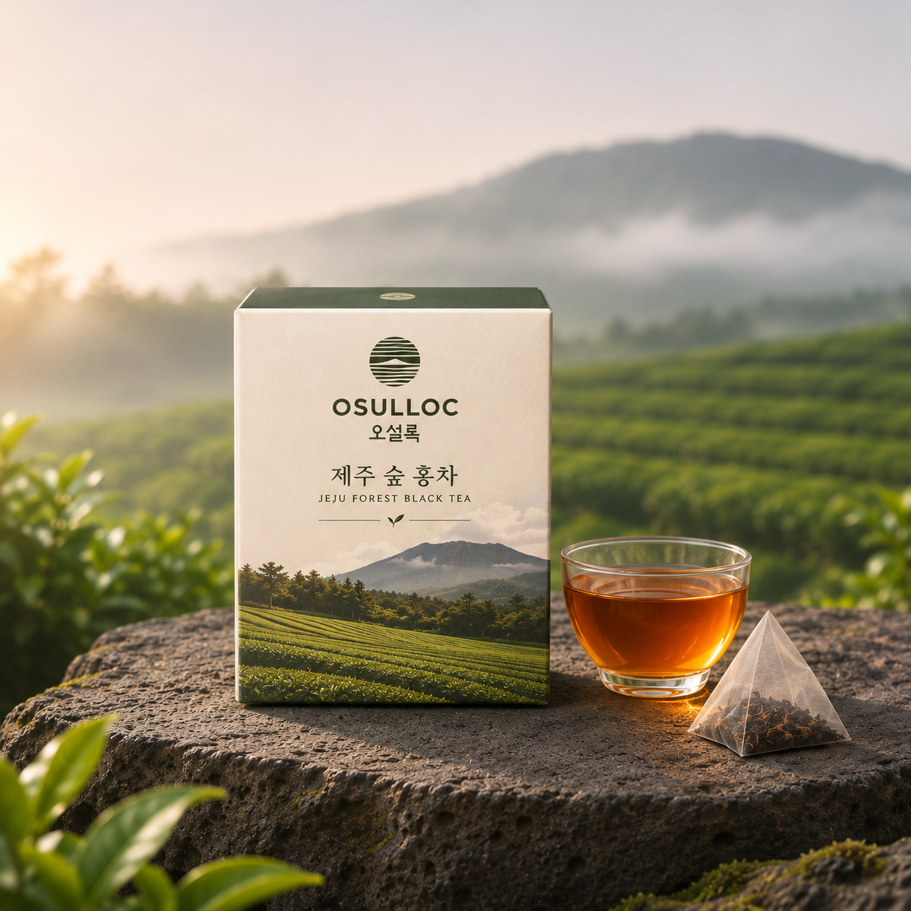
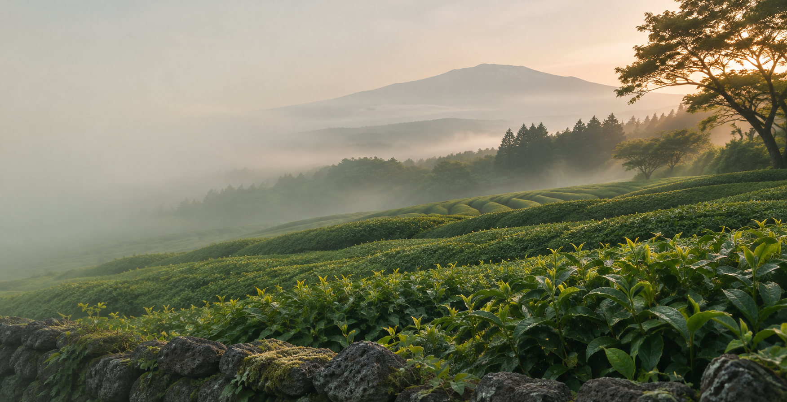
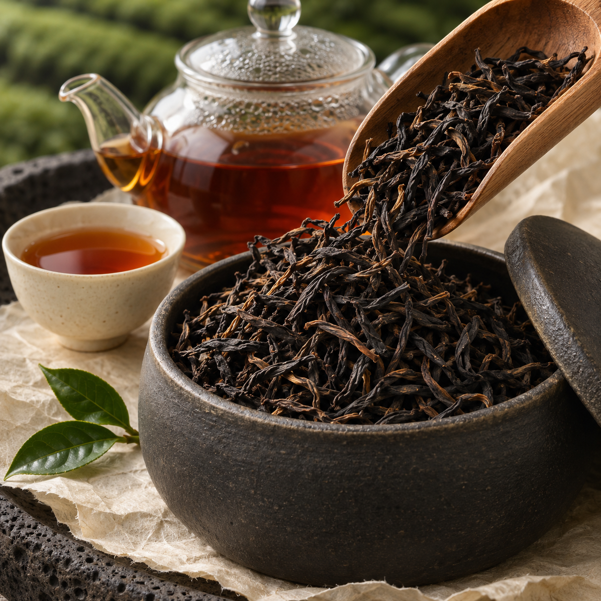
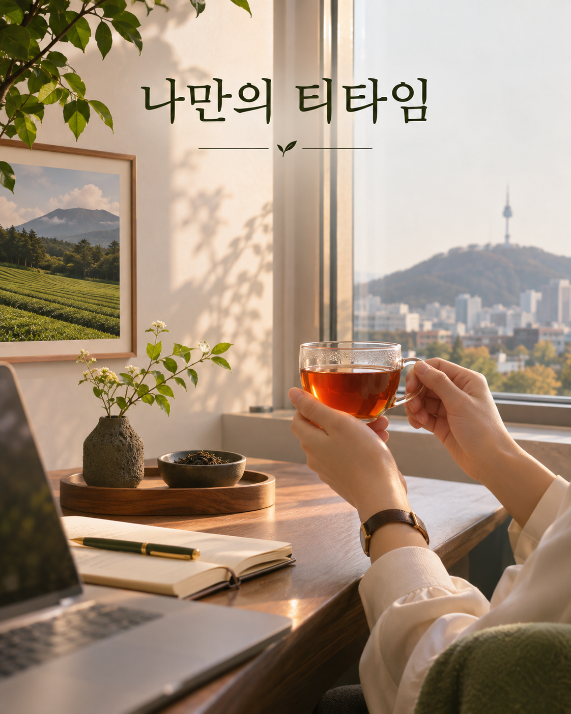
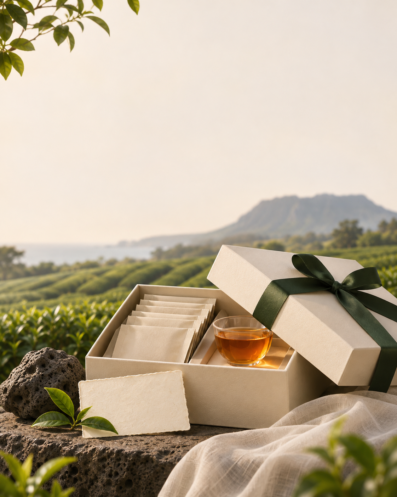

01 / TEA BAGEASY TEA MOMENT
제주숲홍차 10입
간편하게 즐기는 피라미드 티백. 바쁜 하루에 제주를 우려내세요.
공식몰에서 보기
THE STORY OF JEJU TEA FIELDS
1979제주 돌송이차밭 부지 개간이 시작되었습니다.
01 / 05
연혁은 오설록 공식 자료를 바탕으로 구성했으며, 이미지는 장면 연출용입니다.
JEJU FOREST BLACK TEA
제주 숲 차밭의 어린 찻잎으로 만든 홍차.
내 방식에 맞는 한 잔을 골라보세요.

01 / TEA BAGEASY TEA MOMENT
간편하게 즐기는 피라미드 티백. 바쁜 하루에 제주를 우려내세요.
공식몰에서 보기
02 / LOOSE LEAFSLOW TEA RITUAL
잎차의 풍미를 천천히 즐기며 나만의 우림 시간을 만들어보세요.
공식몰에서 보기제품 연출 이미지는 콘셉트 시안입니다. 실제 판매 페이지 적용 시 공식 제품 사진으로 교체하세요.

A MOMENT FOR YOURSELF
해야 할 일 사이에 작은 쉼표를 놓아보세요.
잔을 감싸 쥐고, 제주의 향이 천천히 퍼지는 순간을 만나요.

BREW YOUR PAUSE
차의 형태에 따라 우림 방법을 골라보세요.
10입 티백
물 온도90°C
우리는 시간2분
티백 1개를 컵에 넣고 90°C 물을 부어 2분간 우려주세요. 영상은 준비부터 따르기까지의 과정을 짧게 압축해 보여줍니다.
80g 잎차
물 온도90°C
우리는 시간2분
잎차 1 테이블스푼을 인퓨저에 담고 90°C 물을 부어 2분간 우려주세요. 영상은 잎차를 계량하는 장면부터 짧게 압축해 보여줍니다.
오설록 공식 상품 안내 기준 · 제품 안내가 변경되면 이 문구와 수치를 함께 확인하세요.